Introducing LoRaWAN
And LoRa!
Motivation

LPWAN
- Low Power Wide Area Network
- Requires modifications on OSI stack
Wireless Communication
If we map the frequencies to their amplitude over time we get a spectogram
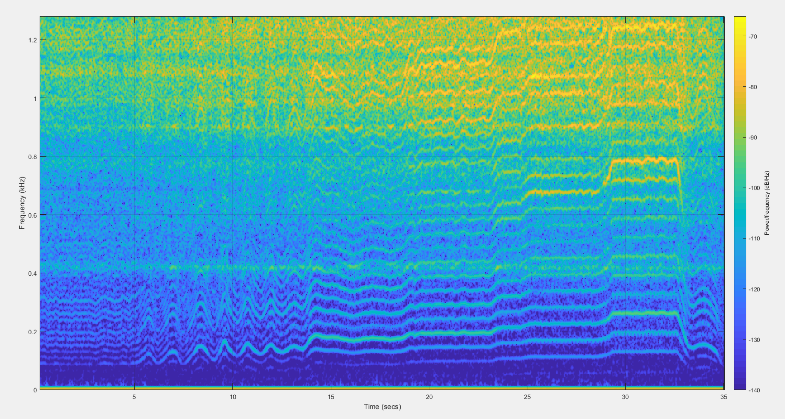Sine wave by frequency modulation
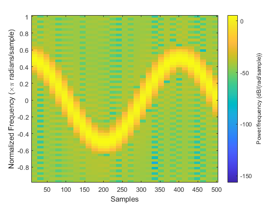LoRa
Chirp modulation
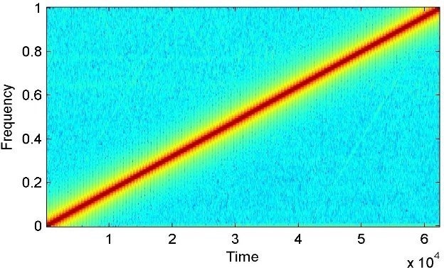
LoRa Packet beginning
10 up chirps followed by 2 down chirpsReal world example
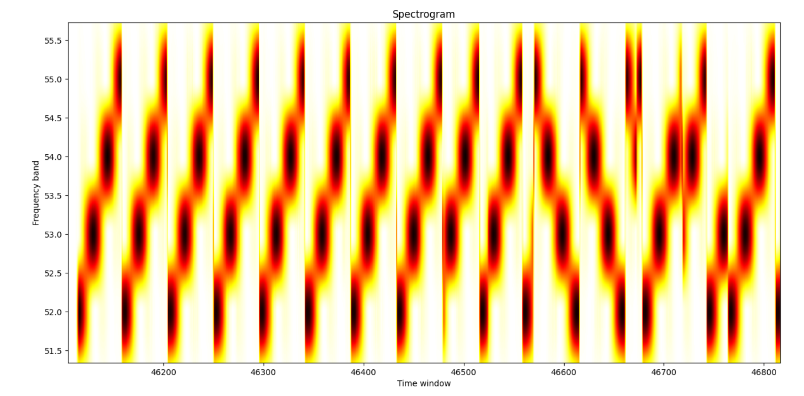Data
Spreading Factor
\[\begin{aligned}
&symbol \ rate = \frac{BW}{2^{SF}} \\
&bitrate = SF * \frac{BW}{2^{SF}}
\end{aligned} \]
Assuming BW=125 khz
Spreading Factor:
Symbol rate:
Bit rate:
Total time (40 bytes): ms
Spreading Factor:
Symbol rate:
Bit rate:
Total time (40 bytes): ms
Other LoRa quirks
What kind of range do you get?
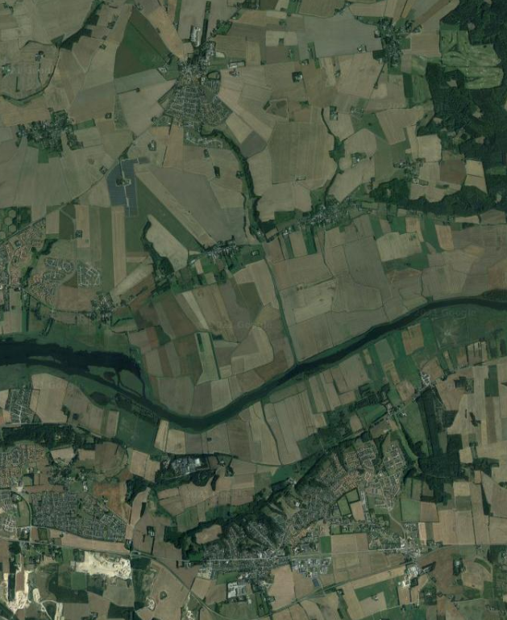 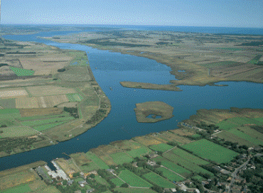 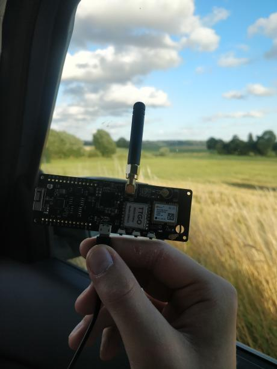That's LoRa!
LoRaWAN
LoRa Alliance
Topology
Node, gateway, network + app server 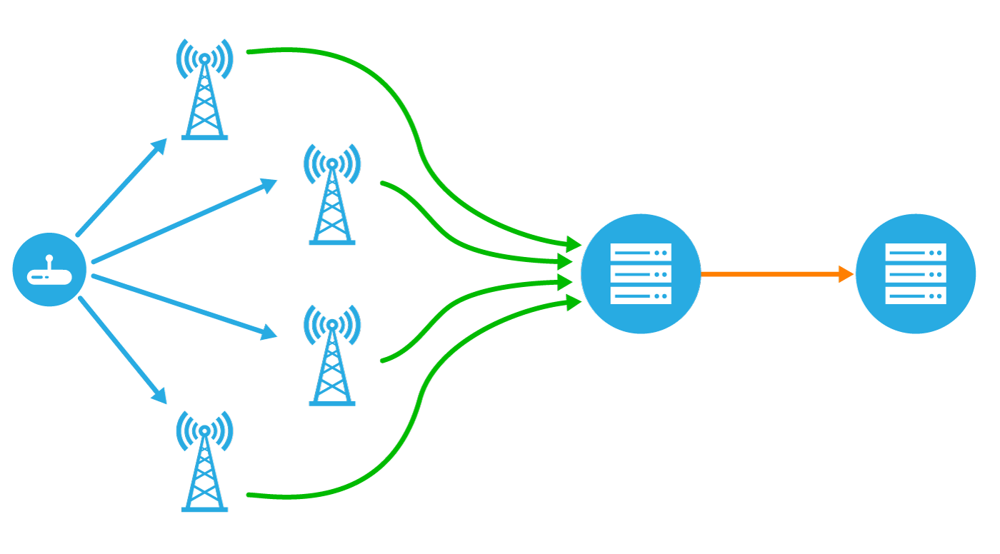The Node
- Often battery powered
- Exists in different classes
Addressing
- DevEUI uniquely identifies a device
- DevAddr is the device address (non unique)
- AppEUI identifies a LoRaWAN application
The Gateway

- Has multiple radios
- Forwards packets to network server
- Has both a LoRa based and traditional physical layer
The Network + App server

- Handles message duplication
- Encryption, decryption
- Handles downlinks
UpLink
Downlink
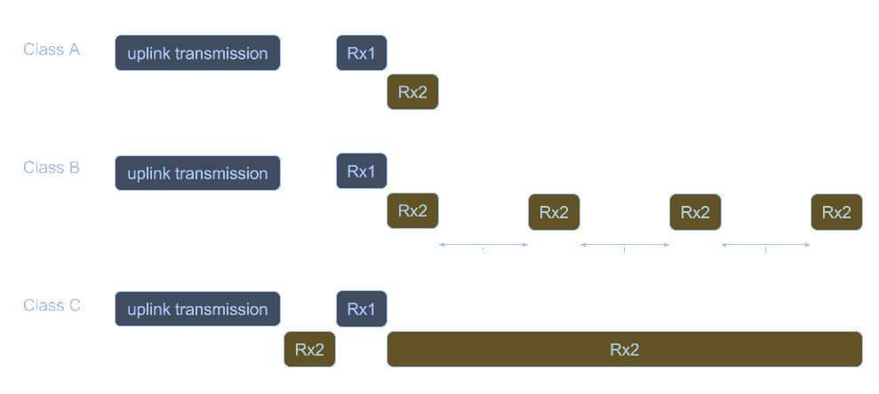OTAA
- End Node sends a join request (uplink), usually with an app key
- Application server evaluates join request, and sends join accept (with devAddr and keys)
- Join request is sent via downlink, and device can begin broadcasting
LoRaWAN in practice
LoRaWAN networks


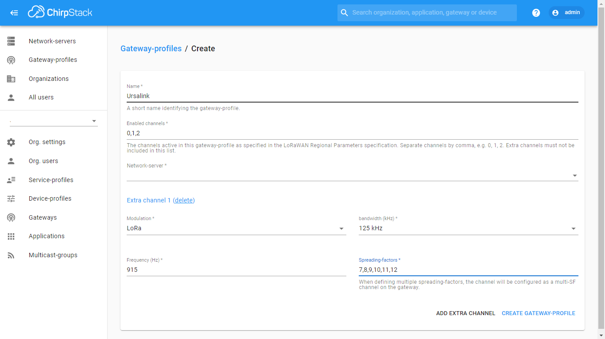
- Open Source!
- Supports most features of LoRaWAN
Gateways

LoRaWAN nodes
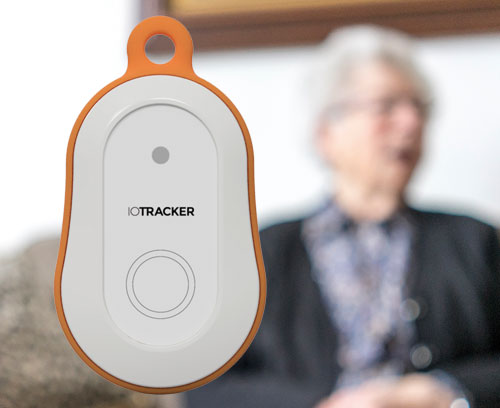 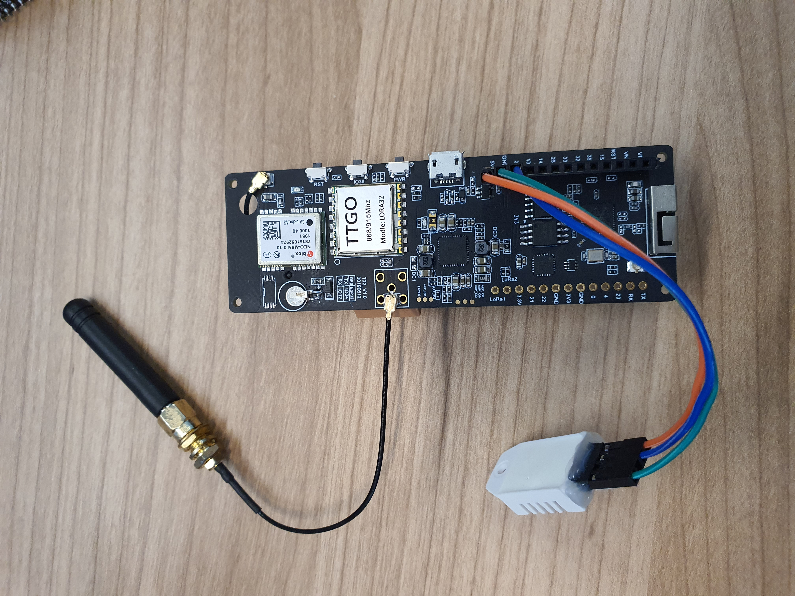
Demo time!
In Conclusion
- The most well known wireless technologies have limitations that are best solved by LPWAN
- We can transmit information by modulating radio waves, and demodulate signals
- LoRa works by sending chirps with different offsets
- LoRaWAN is a network structure built on top of LoRa
- It's easy to get started yourself!
Icons made by Freepik from www.flaticon.com
Icons made by srip from www.flaticon.com